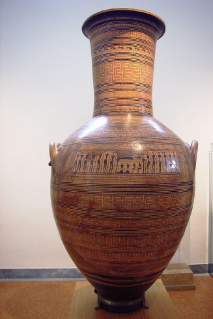
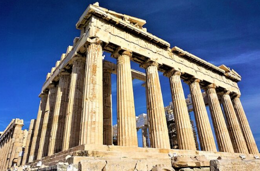
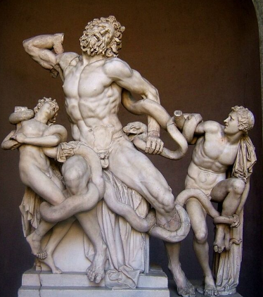

ARTÍSTICA
Profesora de curso: Diego Flores
Arte Griego
Se denomina arte griego al conjunto de manifestaciones artísticas producidas en la Antigua Grecia. Estas producciones, especialmente la arquitectura y la escultura, ejercieron una influencia extraordinaria en la cultura occidental hasta el presente. Ciertas formas incluso se expandieron hacia Oriente a partir de las conquistas de Alejandro Magno, dando lugar al desarrollo del estilo greco-búdico o Gandhara en la India.
Las fuentes para conocer el arte griego son los propios restos que se han conservado, aunque deteriorados y dispersos; las copias realizadas por los romanos a partir de la conquista de Grecia y, finalmente, las obras literarias o tratadistas escritas de la antigüedad, ya que la griega fue la primera cultura que escribió acerca del arte y los artistas.
Períodos del Arte Griego: Se pueden determinar diversos períodos en la evolución del arte griego.
•Estilo Geométrico: Apareció alrededor del siglo VIII a. C. No se han conservado monumentos de este período, que se caracterizó por la ornamentación de la cerámica con formas geométricas y escenas realizadas con figuras esquemáticas y sintéticas. Entre el 700 y el 600 a. C. este estilo derivó hacia otro más descriptivo y orgánico, conocido como estilo orientalizante.

•Período Arcaico: El cual se comprende desde finales del siglo VII a. C. hasta el 480 a. C. Durante este período aparecieron las primeras manifestaciones de arquitectura y escultura monumentales realizadas en piedra y destinadas a perdurar. Esta etapa se caracterizó por la producción de cerámica decorada con escenas mitológicas, literarias y de la vida cotidiana, y por el protagonismo de las representaciones humanas: hombres jóvenes desnudos (kouros) y mujeres vestidas (koré) con formas convencionales y algo rígidas.
•Período Clásico: Abarca desde el 479 a. C. hasta el fin de la guerra del Peloponeso, en el 404 a. C. Corresponde al momento en que el arte y la cultura griega llegaron a su máximo desarrollo. Luego de una etapa de transición, conocida como período severo, los artistas griegos lograron condensar en sus formas la concepción filosófica de la época. Como consecuencia produjeron obras equilibradas, armónicas y serenas, que respondían al ideal de belleza griego. En Atenas se reconstruyó la Acrópolis, la cual había sido destruida por las invasiones persas, y se construyó el Partenón, templo dedicado a la diosa Atenea.

•Período Helenístico: Se desarrolló entre el siglo IV a. C. y el siglo I a. C. Corresponde al período de disolución de las ciudades-estado griegas a partir de la conquista del territorio por Filipo de Macedonia y su incorporación al Imperio macedónico. A partir de la nueva situación de Grecia, los artistas buscaron representar la individualidad, el carácter personal, lo novedoso y lo extraño. Con la expansión del Imperio, las formas griegas se adaptaron a los gustos orientales.
